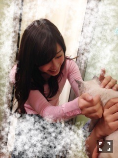
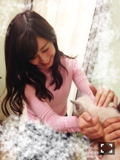

| 2016/05 24 Tue | 斎藤ちはる スポーツは偉大。(´>∀<｀)ゝ |
ちはるーむへようこそ(﹡ˆ ˆ﹡)
オフショルトップス(肩出しトップス)着てる時に
こういうアップの写真撮ると
何も着てないみたいで、恥ずかしい。笑
オフショルトップス好きなんだけどな〜
真夏みたいって言われるからな〜
もう、真夏、めっっっ！！！
真夏には当たり強くなる。
そういえば昨日、六大学野球春季大会
明治が優勝しました！！
おめでとうございます！！
さすが明治！！
やっぱり明治がNO.1！！
(言ってみたかった...♡)
一度応援行ってみたいな〜
みんなで一体となって応援したい！！
一緒に熱を感じたい！！
明治はスポーツも盛んで強いので注目してます\( ˆoˆ )/
さらに女子バレーがオリンピック出場を決めました！！
おめでとうございます！！
斎藤家みんな揃って毎晩試合テレビで見て、
ハラハラドキドキしながら観てました...
うぉー！！さすが沙織選手！！
とか言ってる父親と、
いや〜やっぱり決めてくれると思ってた！
とか言ってる妹と、
いいね、日本いいね！
とか言ってる母親と共に。
実況より賑やかなんじゃないかと思うほど。笑
そう、斎藤家はスポーツ観戦が趣味なんです！
みんなスポーツやってたこともあって、
スポーツ大好き！！
母は、ソフトボール、バレーボール、卓球、ラグビーのマネージャー、アメフトのマネージャー。
妹は、バスケ、卓球、サッカー部のマネージャー。
父は、サッカー歴12年東京都地区選抜(←父がどうしても言えと。)、アメフト歴26年。
私は、バスケ、陸上(幽霊部員だったけど...)。
ざっと書き出してみると怖いくらいにスポーツたくさん出てくる！！
斎藤家のスポーツ好きに、納得。
男子バレーも28日から始まりますね♪
斎藤家揃って応援してます\( ˆoˆ )/
皆さんもオススメスポーツ観戦あったら教えてください！！
ふいに、猫愛でてる写真。

わ〜♡♡
かわいい♡♡

なんて可愛いの。。よしよし♡
みてみて！じゃーん♡
可愛い♡軽いな〜♡
SUUMOのCM撮影の時に、
きいちゃんと一緒の撮影の猫ちゃんに会って
よーしよししました(｡-_-｡)
可愛い。猫。
普段犬派だけど、猫可愛い。
とうとう明日はアルバム「それぞれの椅子」発売日！
渋谷TSUTAYAさんで乃木坂ジャックをしてくださっていて、凄く嬉しい...！！
皆さん観に行ってみてね♡
なかなか行けないから、行ったら感想教えてね♡
あとメンバー全員、アルバムを送ってくださっているお店にそれぞれサインをしているので
あなたの地元にも乃木坂のサインがあるかも！？
探してみてね( ◦˙ ˙◦ )
ふぁーー、。眠い。、
びっくりするくらい眠い...！！
睡眠時間はたっぷり取ってね(｡･o･｡)ﾉ
おやすみ。
斎藤ちはる